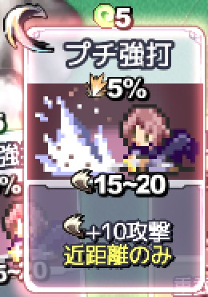

シルバーセカンド開発日誌
片道勇者2 2/2
■
2023-03-11 (土) 片道勇者2開発+3 公式サイト公開&片道勇者プラスRTA▼【公式サイト公開!&片道勇者プラスRTA】
今週もウディタ修正のついでに『片道勇者2』の開発をする感じの週でした！
『片道勇者2』は細かいバグの修正に奔走していたので、
今回は公式サイトを作ったよというお話！
【片道勇者2 公式サイト公開！】
確定情報が少ないのでまだまだ内容が少ないですが、『片道勇者2』公式サイトを作ってみました！
『片道勇者2 公式サイト』
基本はこれまでの内容の復習で、今回新たに
公開されたのはスキルやアイテムカードの情報！
「こんな使い方ができちゃうぞ」みたいな攻略情報めいた内容もちりばめて、
ちょっとは何かイメージできるよう心がけてみました。
公式サイト内に「スキル紹介」が全然ないのはまだほとんど
何もスキルのデータが確定してないからですが、
装備やアイテムの方は色々決まりつつあります。

狩人C 今回は重量制限がない代わりに、いらないアイテムを拾いすぎると弱くなるのでチョイスも迷い所です
ということで、今回は公式サイトに載せたものからアイテムの特徴をご紹介！
【装備】
◆軽量な武器 「ダガー」「レイピア」
威力は低いもののダメージ幅が狭く、連続攻撃率が最も高い武器です。
通常攻撃をするなら最強クラス！
でもスキル使用時には1撃が軽くなってしまうため、合わないスキルも多いです。
たとえばダメージ2倍スキルはこの武器だとイマイチですが、
ダメージ+10スキルなら他と同じく活用できるでしょう。
◆中量武器の剣 「ショートブレイド」「ロングブレイド」
威力は中くらい、ダメージ幅が50％～100％で連続攻撃率もほどほどの、
安定した強さの武器です。
◆中量武器の槍 「ショートスピア」「ロングスピア」
1撃のダメージは剣とほぼ似た性能ですが、
「1マス内の敵全体にヒットする」「壁を貫通してダメージを与える」と
強力な特徴を持っている武器です。
ただその特性上、あっという間に耐久度がなくなります。
◆重量武器の斧 「木こりの斧」「バトルアックス」
最大ダメージはすさまじいのですが最小ダメージも一番低い武器です。
「木こりの斧」はダメージ幅が1％～100％と過激です！
ですが壁や宝箱などの「動かない物体」には常に
最大ダメージが出るので、物体破壊には最高に向いています。
また、スキルを活用したときに最もポテンシャルが高いのも重量武器です。
安定した火力を出すための工夫が求められます。
◆軽い防具、重い防具、特殊な防具
防具はたいてい、「最大HP」を増加させられます！
重くて頑丈な防具はさらに「装甲」も増加しますが、
「ギガントプレート」のような重すぎる鎧は
スキル使用時のST消費が増加するペナルティも受けます。
「旅人の服」「チェインクロス」「ギガントプレート」のような
基本的な防具は耐久度が無限ですが、
「耐火服」のような特殊な防具は耐久度が減っていくので、
使いどころを見極めなければなりません。
◆「盾」と「追加装甲」の差別化
盾を装備すると「盾ガード」という常備カードが手札に入るようになります。
「盾ガード」を使ったときだけ、盾の装甲＆回避率アップ効果が発揮されます。
通常攻撃時にも自動で「盾ガード」が使われます。
ですが盾は「アクティブスキルとして使わなければいけない」がゆえに、
移動や待機したターン中は盾の効果を発揮できないという弱点があります。
それに対して「追加装甲」は装備していれば移動中でも
ちゃんとガードしてくれる頼れる友！ 「移動」や「待機(集中が1増える）」を
多用するクラスは盾を構えられない場面が多いので
「追加装甲」の方が便利です。でも耐久度が低いのが難点。
【アイテム】
◆ターン消費する食料品、ターン消費なしで使えるアイテム
アイテムカードの使用に関しては、ムシャムシャしなければならない
「癒やしの草」や「お弁当」「ナユタの実」などの「食料品」に限りターンを消費します。
一方、「アンプル」系のアイテムや「投擲武器」は
手札にさえあればターンを消費せず使えます！ すごく強い！ かつ柔軟！
◆『スタミナ草』や『スタミナアンプル』が強力に！
今作では「スタミナ」系のアイテムが強力になりました！
というのも、これらのアイテムを使うと一定ターンの間、
行動ごとに「追加ST(スタミナ)」を10点とか20点得られるのです！
ちなみに「追加ST」は自分のSTを超えて保持される追加のSTで、
行動すると0に戻ります。毎ターン20点も余分に使えると、
『強打』3連発を毎ターン撃ちつづけてもほとんどスタミナが減りません、強い！
◆『投げナイフ』を他の方向に投げてから戦闘も可！
投擲武器を使ってもターンを消費しない、ということは
「投げナイフ」を後ろの敵に投げて倒してから正面の強敵と戦う、ということも可能になります！
前作では「投げナイフ」にも1ターン使う都合上、
立ち位置がイマイチだった投げアイテムですが、
今作では単純に火力の底上げや柔軟な火力配分に使用できます。
回復アイテムも貴重なので、バリバリ先手を取って敵を倒していくことが重要です。
※ちなみにスキルは、複数枚を同時使用したとしても「1方向」にしか撃てません。
なのでターン消費しない攻撃アイテムは便利なんですよ。
といった感じで、アイテム周りについては前作で差や
有用性がぼんやりしていた部分に色々とアイデアを投入して、
新たな差別化や有用化を試みています。
クラス(職業)によって必要なアイテムや重要度が変わるように構成できると、
ゲームとして飽きにくくなるので理想的ですね！
【不思議のダンジョンRTAフェスで『片道勇者プラス』が取り上げられました！+バグ修正！】
なんと！ おかげさまで「不思議のダンジョンRTAフェス」という
RTA(リアルタイムアタック)配信フェスで『片道勇者プラス』が取り上げられました！
朝早く起きて拝見しておりましたが、何度かゲームオーバー寸前の危機に
陥りながらも運のいい部分もありつつで無事に
「世界の果て」を攻略しておられて見所がありました！
走者のそらちん様、解説のひのきまん様、ありがとうございました！ 操作が超速い！
ミラーシールド！（盾にしかならない少女ミラを指して）
◆放送を見たい方はこちら！（リンク先の秒数からすぐ始まります）
→ https://www.twitch.tv/videos/1749057689?t=0h56m15s
チャット欄も見られるのが面白いです。
【片道勇者(プラス)のプレイ時間カウントを修正しました】
それと一緒に、放送中に「『冒険の履歴』で表示されているプレイ時間が
タイトル画面の分も含まれてしまう」というご指摘をいただいたので、
Steam版ともども修正しておきました！
といいますか、実はプレイ時間に関しては始まりの方だけでなく
終わりの方の「ゲーム終了からリザルト画面」も含まれてしまっていたので、
そこも一緒に直しておきました。
今は「ローディング終了で『決定』を押した瞬間 → ゲームオーバーかボス撃破まで」の、
おおよそRTA的にそれっぽい秒数をカウントするようになっているはずです。
これでタイムアタック用のデータを見直したい人も安心！
『片道勇者2』でも同じ形式で時間をカウントするよう注意しておきます。
ということでやり込みを拝見して元気もいただいたので
『片道勇者2』の開発も進めていきます！ がんばるぞー！ ■
2023-02-25 (土) 片道勇者2開発+2 仲間実装中！▼
相変わらずほとんどの時間と体力がウディタの修正に費やされていますが
空き時間で少しでも『片道勇者2』開発を進めています。
今回は仲間機能についてご紹介！
※『とぶクスリ』を使うと荷運び馬が置いて行かれたのが前作ですが今回は平気かも！
ちなみに剣士Bはイラストないけど片道勇者ノベルのトップバッターでした。
【片道勇者2の仲間】
『片道勇者2』では最大2人の仲間を連れて歩くことができます！
前作では仲間にできるのは最大3人でしたが、
最大人数まで増えるとやや持て余していたので
今作では2人に絞ることにしました。
今週は仲間がいる場合の処理を色々作っていました。
仲間機能の紹介としては以下のような感じです。
＜「仲間」は主人公と同じマスにいる！＞
ローグライクRPGだと仲間が主人公とは別のマスにいるキャラだったりして
戦闘で協力しにくかったりしますが、『片道勇者』シリーズでは
仲間は主人公と同じマスで戦ってくれます！
＜仲間がサポートしてくれる！＞
いつも通り仲間が何らかの形でサポートしてくれます。
敵に攻撃したり、1日に一定回数だけ回復させてくれるなども！
＜仲間と話せる！＞
仲間と会話ができます。前作はザツに作った感じの
仲間会話機能でしたが、今回はもっと会話が切り替わる状況を増やしたり、
状況に応じてコメントしたりするタイミングを増やしたいですね。
地形ごとに一言会話が聞けるだけでもちょっと面白い！
また、2人だけなら「特定のペアになったときだけ専用会話が発生する」
という形も作りやすくなります。
「この3人の仲間がいたら絶対3人目が首突っ込んでくるでしょ！」
という面倒な場面を無視して2人+主人公との会話に専念できるからですね！
＜仲間を盾にできる＞
主人公が敵に対して後ろを見せれば攻撃が仲間に行くので、
緊急時には仲間を盾にできます！
といっても主人公より耐久力が低いことが多いので長くは持ちません。
＜「協力NPC」も「仲間」として連れられる！ かも？＞
前作でいう、主人公と同じマスにいない「協力NPC」の搭載も
考えているのですが、真後ろにいると、ヘクス型のマップだと
前線に出てくるまで2ターンも何もしない時間が発生してしまいます。
なのでいっそのこと「協力NPC」も普通の「仲間」と同じ扱いに
してしまうのもありかもしれません。
簡単に下位の仲間も入れられるようにすることで、
仲間がいると有利すぎだった前作のバランスだったのを丸くしつつ、
「魅力」（今作では「カリスマ」）のありがたみを伸ばす形です。
そうすることで、仲間を入れることが難しい「魅力」の低いクラスを
もっと強くすることもできるでしょう。
【敵グループ処理】
実はこの仲間システムは敵にも適用されます。
＜敵も仲間を連れて出現する！＞
敵も同時に最大2体の仲間を連れ、3人チームで出現することがあります。
これにより、1マスへの攻撃として「単体ダメージ」の他に
「1マス内範囲ダメージ」という区別が新たに生まれました。
後者は1マス内の敵グループ全員にダメージを与えられる攻撃です。
この敵グループ化、弱い敵が3体集まっただけでも放置して
攻撃を受ければ3倍のダメージを受けるわけで、「野犬」の群れでも脅威になります！
前作でイメージしてもらうなら、1撃15ダメージくらいの野犬でも
3匹いれば1ターンで45ダメージと魔王並みの打撃力を叩き出すのです！
一方で、なんとかうまく先制できたり、少しでいいので
装甲を一時的に上げたり、弱い火力でもいいので範囲攻撃を撃てれば
敵の火力を大幅に削げるので、敵グループは工夫のしどころを
増やしやすい部分です。うまく使っていきたいですね！
という感じで少しずつですが開発を進めております！
引き続きウディタを修正しつつジワジワでも進めていきます。■
2023-02-11 (土) 片道勇者2開発+1 復習編▼
何とか時間の数割かだけでも新作『片道勇者2』の開発に回し始めています！
自分には特に縁がないバレンタイン記念ネムリ！
ちなみにこのネムリは片道勇者1仕様です、2はベールに花が付いてます。
あまりに久々の片道勇者2開発記事なので、
今回は私の開発目標の一旦の見直しのためにも
『片道勇者2』ってどんなゲームになるの？ というお話を復習していきます。
『片道勇者2』の公式サイトもそろそろ作っていきたいので、
紹介の草案を作っておかないとですしね！
【 『片道勇者2』は強制スクロール＆デッキ構築ローグライク！】
※画面は開発中のものです、テスト文が出てる！
『片道勇者2』は前作に続き「強制スクロールローグライク」です！
「強制スクロール」は分かりますが「ローグライク」の
定義が分かりにくいかもしれません。
現代では『ローグライク』というと、ランダム生成されたマップを冒険したり、
ランダムに登場するアイテムを手に入れたり、
ランダムな敵と戦ったりしていくゲーム全般のことを指す雰囲気になっており、
『片道勇者2』もその1つです。
そして今作はそれに「デッキ構築」要素が含まれます！
「デッキ構築」とは、簡単に言うと
『旅の途中でカードとして入手できるスキルやアイテムなどを
上手に選んで強力なデッキ（カードの束）を作りながら進めていく要素』
です。
「デッキ構築ゲーム」は、基本的には相乗効果を考えながら
カードを選んでデッキに組み込んでいき、最終的にボスを倒したり
目標を達成できるほど強くなることが目標となります。
前作も
「ボスを倒したり生き延びるためにうまくスキルやアイテムをそろえていく」
という意味では広義のデッキ構築と言えるかもしれませんが、
一般的なデッキ構築ゲームのミソは
「今のターンでは【手札】に来たカードしか使えない」
という点！ 強い組み合わせで手札を引けるよう、
前作以上に持ちカードの整理や厳選が重要になってきます。
そして選択肢が「手札」だけに制限される分、スキルやアイテム1つ1つのパワーを
開発側としては前作よりかなり上げてよくなるのも面白い点です。
【どんな風にカードが使われるの？】
『片道勇者2』では、前作にあった「スキル」や、落ちている「アイテム」、
そして「経験値」をカードとして手に入れることができ、
それがひとまとまりになった「デッキ」を作っていくことになります。
これらのカードが特に重要になるのは戦闘中！
戦闘では手札にある「スキル」「アイテム」「経験値」を頻繁に使用することになります。
ここではカードを使わない「通常攻撃」と合わせ、それぞれのカード種の特徴をご紹介します。
＜通常攻撃＞
カードを使わず、武器消費以外のコストを消費せずにいつでも使える弱い攻撃です。
基本的に、「通常攻撃」したターンは「スキル攻撃」は行えません。
前作通り、たまに「連続攻撃」が発生し、軽い武器かつ
自レベルが上がるほど連続攻撃率が高くなります。
通常攻撃に利点があるとすれば、「ST（スタミナ）を消費しない」
「元気があまり減らない」「どうしようもない手札のときは最適解になる」点です。
スキルを使ってSTが減ってしまったタイミングで息継ぎとして使ったり、
弱い相手に無駄な「元気」を使いたくないとき、手札では何もできないときに使えます。
また、デッキの組み方によっては通常攻撃特化ビルドなども作れます。
手札に来ているパッシブカードの効果は通常攻撃にも反映されるのでパッシブ祭りプレイも有りです。
＜スキル＞

スキルカードは通常、STを消費して使用します。
今作ではなんと、STがある限りスキルを1ターンに【複数同時に】使うことができます！
1ターンで『強打』2連発もOK！
さらには「クリティカル率アップのパッシブスキルカード」と組み合わせてさらに威力アップ！
みたいなこともできます。もちろんそれらは、手札に来てないとダメですけれどね。
なお、スキルを使うと通常攻撃時よりも元気が減るのが早くなります。
元気が減ると最大STが一時的に減少してしまいますが、
これは食料アイテムを使うことで回復可能です。
ちなみに前作と違い、使用後にSTがマイナスになる状態でもスキルを発動できます！
ただしSTがマイナスになった分だけ停止ターンが発生するので、
最後の一発かいちかばちかの賭けにご利用ください。
＜アイテム＞
アイテムカードには「ターンを消費せず瞬間で使えるアイテム」と
「1ターン消費するアイテム」があります。
「ターン消費なし」のアイテムなら、使った後でも
「通常攻撃」や「スキル行動」「移動」などが可能です。
「アイテム」は「スキル」と違ってそのほとんどが消耗品です。
たとえば、以下のようなものがあります。
・『癒しのアンプル』：ターンを消費せずにHPを中回復できます。
・『投げナイフ』：ターンを消費せず、2マス先に投げて敵にダメージを与えられます。
・『癒やしの草』：ターンを消費してHPと最大STを小回復します（使った時点でターンが終わります！）。基本的に食べ物系はターンを消費します。
・『ショートブレイド』：装備できる「武器」です。武器はたいてい100～200回分くらいの耐久度があります。「投げる」こともできます。
＜経験値＞
敵を倒すと経験値カードがもらえます。
間隔を空けず、連続して多くの敵を倒すほど大きな経験値カードを得ることができます。
そしてこれらの「経験値」カードを、「女神像」などで開ける
レベルアップ画面で消費することで「スキル」カードが取得できます！
また、移動中や戦闘中に大きい経験値カードを使うと、
ターン消費なしで以下のいずれかの効果を得ることができます。
◆HPとSTを小回復し、女神ポイントを得る。
→ 女神ポイントがたまっていると女神像でちょっとした願いを叶えてもらえます。
◆手札を追加でX枚引き、さらに一時的な追加STを得られる。
→ つまり、単純に言えば1ターンのスキル使用可能数を増やせたりできます！
経験値を大量に使えば1ターンですさまじい猛攻ができるでしょう。
◆「追加移動」を得る。
→ 一定歩数だけターンを消費せずに移動可能になります。
敵からの逃走や、距離を取る用途に使えます。
こんな風に、レベルアップに使わなくても、
「経験値」カードは戦闘力や移動力のちょっとしたブーストに使うことができます。
もはや新たなスキルを取る必要がなくなるほど成長したとしても、
ボスとの戦いに備えた「仕上げ」に使うことができるでしょう。
もちろん前作同様、スキルやアイテムには戦闘以外に使用できるものも色々あります。
移動速度を上げる（今作では追加移動を得る？）「ダッシュ」スキルや、
盾を修理するスキル、弓を作るスキル、地形を変化させる「魔法の橋」アイテムなどなど！
それらもうまく活用して冒険を進めていくことになるでしょう。
【どんなプレイ感になりそう？】
ここでは開発者視点で「どんなプレイスキルが求められるようにしたいか」の目標を整理していきます。
まず先に、前作のゲーム上の要求スキルを整理してみます。
「2」という立ち位置である都合上、基本的には1のこれらが土台となります。
【前作『片道勇者1』のプレイスキル】
『片道勇者1』は次のような判断要素やプレイ上達要素がありました。
【旅の途中のプレイスキル】
・うまく移動して闇に呑まれないようにする
・地図を見ながら移動ルートを検討する
・勝てる勝てないの判断をし、経験値をなるべく多く稼ぐ
・どこまで施設を探索するか、脱出タイミングを図るかの駆け引きをする
・保有アイテムの良い組み合わせを考えながら入れ替えする
・鑑定状態を考慮しつつの所持装備入れ替えをする
（装備はたいてい未鑑定で「残り回数が分からなかった」ため、
そういったリスクも考えて拾う必要があました）
・技の伝道師や女神像や雇える傭兵などに会ったら現状を有利にする選択をする
【戦闘・戦術面のプレイスキル】
・位置取りをうまく考えて囲まれずに戦う（必要なら街の人だって使おう！）
・状況に応じてうまくスキルを使うか通常攻撃で戦うかの判断。
・危険そうなら手持ちのアイテムも使って戦う（1では使用アイテムは好きに選べました）
・緊急時に仲間がいれば仲間を盾にして戦う判断もする
【片道勇者2で求めるプレイスキル】
『片道勇者2』は上記1の要素に加えて、今のところそれぞれ
以下のゲーム的判断を要求する形になっています。
ここからもっと増えるかもしれません。
【旅の途中】
・スキル取得時やアイテム回収時、デッキ構成を考えて、
手札内での相乗効果を期待できる適切なカードを選ぶ。
→ 手札内で強力な組み合わせが出やすいデッキを作れば、
1枚単位で使ったときの何倍もの力を発揮することが可能です！
より素早く魔王が倒せるようになるでしょう。
・バランスを考えてデッキ全体を構成する。
→ 今作ではいらないものを持っているほど緊急時の対応力が下がるので、
高難易度ではアイテムやスキルの所持バランスも考える必要が出てきます。
【戦闘】
・「手札」という少ない選択肢の中からいまの最も適切な解を適切な順で選ぶ。
→ 『片道勇者1』のように全ての道具から選んだりはできないので、
うまい順に使ったり、強力な消耗スキルやアイテムを消費したり、
緊急時は「経験値」も使って切り抜ける必要が出てきます。
また1ターンで何個もアイテムを使えたり、複数スキルを同時に発動できるので、
「使う順番」も大事な要素になってきます。
・デッキ内から好きなカードを手札に持ってこられたり、戦いを有利にする「アビリティ」をうまく使う。
→ アビリティはどこでも使えるスペシャル能力で、ゲームスタート時に
「特徴」として取得できます。たいていクールタイムが設定されています。
・なるべく連続で敵を倒し、数値の高い経験値を得る。
【前作からなくなるかもしれない要素】
・鑑定状況を考慮しながらの所持装備入れ替え
→ 今回は装備が全て「鑑定済み」になっているので、
未知の武装に対して構える必要はなくなりました。
従来の鑑定能力の代わりに、クラス特性として
「鑑定能力がありそうな職は装備の+値が増える確率が上がる」
という感じにしようかなと考え中です。
フレーバー的には「隠された能力が分かる」わけですね。
・地図を見ながら移動ルートを検討する
→ 衛星地図が出てるとそっちを見るのがメインになっちゃうので、
デフォルトではそもそも地図を見なくても困らないような感じにしたいと考え中です。
素でも建物の方向が地図なしで分かるとか、
見たいときにクールタイムありで周辺地図を見られるようにしてワンポイント機能にするとか、
それに加えていつでも地図が見たい人向けの「特徴」などが搭載されるかもしれません。
ということで基本は片道勇者1に『デッキ構築要素』を自然に追加しつつ、
「前作で個人的に扱いに困った部分は抜いていく」という感じを目指したいと考えています。
今作では、今の作りかけ版でも次に来る手札がよいものであることを
祈る時間が前作より増える形になっているのですが、
これ自体は個人的に前より面白く感じられる部分ですね！
細かい単位で「辛くない程度の運ゲー」が発生するのは、
難易度次第で楽しい部分に感じます。
運に頼らないと即終わるほどのつらい運ゲーは私もイヤです（が動画映えはするかも？）
あと「遊びやすさ」について！
全体のプレイ感やプレイコスト、判断しどころの頻度や重さ自体は、
なるべく前作と似た感じにしていきたいと考えています。
ざっくりとした遊びの目安としては、
「通常時は前作同様まあまあ気楽に遊べて、難易度が低ければ
スキルを適当に取ってもそれなりに遊べるけど、緊急時には移動の判断や
デッキ構築やリソースの切り所が甘いと大変になってしまう！
一方で、うまくやりつつ運もあれば前作より強力なシナジーがたまに生み出せてヒャッホー！」
という雰囲気を目指していきたいと考えています。
今のところ、「ゲームを開始して仮ボス倒して終了してエンディング」という流れは
仮組みながらすでに作ってあるので、次の目標は自分が最も楽しいと感じられる
「ハード」難易度の「ゲームプレイ部分」を完成させるべく、
果てしないデータ作成をしていく予定です！
もちろん、その途中で判明した実装の必要があるシステムも
積極的に実装していきます。お話部分はまだまだ先です。
そんなわけで、ウディタ3へと最新化した私のゲーム開発ツールと共に、
楽しいゲーム開発の日々を再び楽しんでいこうと思います！■
2022-04-16 (土) 片道勇者2 【60】 プレイ履歴や統計▼
私事ですが親が入院していたので、介護活動に割くエネルギーが減らせる分
モチベーション的になかなか進めにくかった作業を進めようと考え、
今回は「プレイ履歴」や「クラス統計」まわりを作っていました。
【プレイ履歴】 クリックすると最後に持っていたデッキ内容も表示できるようにしたい！
【クラス統計】 こちらはいつも通りですが、追加で「特に多く取得したスキル」も掲載したい！
死因ランキングなども取れたら面白そうなんですが。
これらは簡単に見えて、うまいことデータ処理をしたりするのが案外難しく、
片道勇者プラスで「クラス別統計データ」を実装したときも
しばらくデータの蓄積に失敗して苦戦していた記憶があります。
これらの機能は、「見直すのが面白い！」という方もいらっしゃる一方で、
メインのゲーム体験的には何も変わらないところなので
実はやる気的に少し億劫な部分だったのですが、
ひとまずここで大枠ができたのでだいぶ気持ちがスッキリしました。
ですがまだ、作るのが一番大変な「リプレイ機能」などが残っています！
「リプレイ」は割と評判がよかった機能なので、
付けられるなら今回もぜひ付けたいですね。
他のローグライク作品でもあまりリプレイが搭載されないくらいには、
作るのが面倒な機能でもあるんですけれども！
でも、前作でもそれをふまえた上で実装をしたということは、
ローグライクに詳しくなかった当時の自分としても
「リプレイ」は魅力的な機能の一つだと考えていたのだと思います。
盛り上がった冒険の盛り上がり度合いを残したままリプレイにできると理想なんですが、
今回で一気にそこまで到達するのは難しそうですね。
とはいえ、少しずつでも楽しいリプレイ作りのための経験を
積み重ねていきたい気持ちはあります。
そんなわけで、システム部分の未実装の部分も少しずつですが減っています。
山ほどあるデータ作成もジワジワ進めつつ、まだまだ長い道のりは続きます。■
2022-02-26 (土) 片道勇者2 【59】 周回関連機能の実装▼【片道勇者2 周回関連機能の実装】
NPCや街などのデータ作りに疲れてきたので、
ここまで後回しにしてきた「周回関連機能の実装」に取りかかることにしました。
1周クリア時に何かアンロックしたり、倉庫に入れたりする処理ですね。
まだオプション的な要素は全然できていませんが、片道無印版で実装されていた
ゲームの基本的なメインループはほぼ完成することになります。
（シナリオ進めるための要素はまだ考え中！ 前作は「城の住人」でシナリオ進行してましたね）
ということで今回はその辺の周回関連機能について、変わった点をご紹介！
キャラメイク画面から行ける解放画面
前回はゲーム終了時にしかアンロックできませんでしたが、今回は「タイトル画面」からでも
アンロック画面や次元倉庫にアクセスすることも可能になります。
さらには次元倉庫に「直前の周のアイテム交換をやり直せる機能」まで搭載！
たとえばプレイを開始したとき、ガンガンに鍛え抜いたロングブレイドを
前回うっかり入れ忘れていたことに気付いてしまった場合は、
すぐリセットしてキャラメイク画面から「最終交換」をやり直せば
前回入れ忘れたアイテムを入れ直すことができます！ 安心度アップ！
こんな風に「注意力不足で財産を失いかけても後で取り戻すチャンスがある」という仕組みは、
過剰な注意力を費やしたり確認作業を重ねたりする量を減らせるので、
プレイアビリティの向上に繋がりそうです。
もちろん「特徴」や「クラス」、「エクストラ要素」の解放も以前通り！
『片道勇者プラス』の攻略wikiを見たら「特徴」の種類が思ったより少なかったので、
今回は面白そうなアイデアを詰め込んでいきたいですね。
200kmに1回修理ができるアビリティとか。
次元倉庫の「拡張」も前作よりすばやく直感的に！

あと次元倉庫の「サイズ」はアイテムの入れ替え中に増やせるようにしておきました。
枠が足りないことに気付いていちいち前の画面に戻って次元倉庫の枠を増やして
また交換画面に来るのは面倒臭い！
一度作り直したところもよく考え直して、こういった面倒くささがあるところは
思いつく限り減らしていきたいです。 ■
2022-01-29 (土) 片道勇者2 【58】 NPC作成と付随機能と▼【片道勇者2 NPC作成と付随機能と】
ずっとNPC作成や施設作成中です！
量が多い！ 必要なシステムもどんどん作業リストに積み上がっていく！
ひとまず今回出くわしたバグ動画を撮っておきましたので
よければご覧ください ↓
【開発中のハイライト動画（24秒動画）】
【鍛冶屋】
ということで、いまいち変化のない地味～な画面写真の中から
がんばって引っ張り出した今回の作業の目玉は、
「鍛冶屋に装備中のもの以外でも渡して修理できるようにしたぞー！」とか。
（つまり今作では装備中以外の武具も選んで修理できます、装備入れ替えは面倒ですからね）
アイテム選択画面。これを応用して回復アイテムだけ渡すとか（腐った）ナユタの実をネムリにあげるとか作れるはず
と思ったらバグで修理費用がすごくてびっくりしたとか。

直す必要のない装備を選んだら修理額がすごかったバグ
【装備の調整師】
他にも、
「今作の付与の調整師は外すだけじゃなくて1つの付与を付けてもらえるぞー！」
付けてもらえるのはランダムで1種類ですが今作の付与は全部強力です
など、新機能の追加が必要なキャラの作成をがんばっていました。
「新しいウィンドウ処理」とか「（滅多に使わない）修理コマンド」とか
「付与の追加処理」とか作らなきゃいけないので、この辺は
「メッセージ書けばとりあえずNPC完成！」ってわけにもいかないんですね。
ちなみに、一番上の動画の「酒場のマスター」に「水だけ（無料）」みたいな選択肢が
増えたりしたのもそうですが、一部のNPCはちょっとずつブラッシュアップされています。
全体的にありがたさを増していきたいですね！
他にも、旧作のデータ再現だけでも膨大で、
作らなきゃいけない「特殊処理」はまだまだ盛りだくさん！
でもアイデアを考える時間は使わないので、その分いくらか早いはずです。
【その次は？ さらなる地帯の色づけをしたい】
で、「前作にもあった基本的なNPC」の搭載が一通り済んだら、
次は地形ごとにさらに個性付けするためのネタなどを入れていきたいと考えています。
たとえばいつかいただいた、環境保護団体「緑の森」の建物が「草原」地帯にあるとか！
荒野では荒くれ者や犯罪者ばっかりで、施設にも「山賊ハウス」みたいなのが出てきて
そこではネムリが捕まってたり商人が捕まってたりするとか！
そういう、これまで色が薄かった「地帯ごとの特色の強化案」を色々入れていきたいですね！
火山と雪原と洞窟と海岸と要塞あたりは割と個性付けされていた感じがありましたが
草原と荒野と山脈と遺跡地帯あたりは個性がイマイチだったので。
そこまでできれば、一通りのアイテムや地形の出方を含めた
ゲームバランスが具体的にチェックできるようになってきます。
「ちょっと作れば分かるんじゃ？」 と思われるかもしれませんが、
ローグライクは「アイテムの種類が増えた」というだけで
回復アイテムの出現率が相対的に減ったりして
ゲームバランスがドカーンと変わったりするゲームジャンルなので、
ひととおりそろわないと何が起きるか本当に掴みにくいんですよ。
ひとまず最初は、自分の一番楽しい難しさを
「ハード」名目の難易度として作っていきたいと考えております。
自分が100時間くらい遊べるゲームにできれば理想なんですけれども果たして！ 片道勇者2 2/2
Copyright © SmokingWOLF / Silver Second
 カテゴリ: 片道勇者2
カテゴリ: 片道勇者2 カテゴリ: 片道勇者2
カテゴリ: 片道勇者2